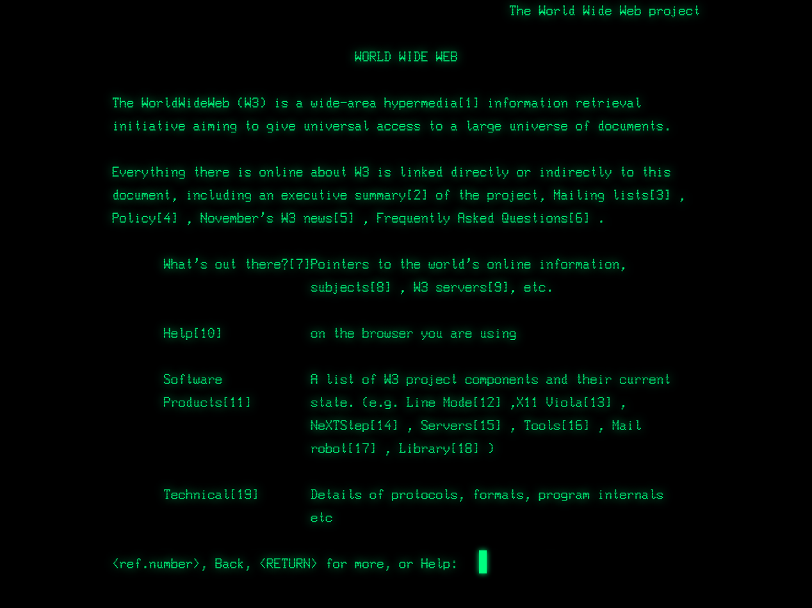

A talk by this guy

@CaseyLeask
During the course of this talk,
11 Javascript frameworks will be born and die
Javascript Without Javascript
What does that even mean?
Why wouldn't I just use JS?
Because you cannot rely on JavaScript
Does your site work for your visitors?
- Screen readers
- 3G connections
- Old browsers
If you don't care about any of those things, go for it
Do you do this?
<script
src="https://ajax.googleapis.com/../jquery.min.js">
</script src>
You shouldn't
Google has no SLA with you
You cannot assume JS will always work
- External CDNs
- Network failures
- Coding errors
- Browser plugins
- Cross Origin problems
Why am I so cranky?
A look at where we have come from
History of the web
The first webpage (90')
How it looked then
How it looks now
<HEADER>
<TITLE>The World Wide Web project</TITLE>
<NEXTID N="55">
</HEADER>
<BODY>
<H1>World Wide Web</H1>The WorldWideWeb (W3) is a wide-area<A
NAME=0 HREF="WhatIs.html">
hypermedia</A> information retrieval
initiative aiming to give universal
access to a large universe of documents.<P>
Everything there is online about
W3 is linked directly or indirectly
to this document, including an <A
NAME=24 HREF="Summary.html">executive
summary</A> of the project, <A
NAME=29 HREF="Administration/Mailing/Overview.html">Mailing lists</A>
, <A
NAME=30 HREF="Policy.html">Policy</A> , November's <A
NAME=34 HREF="News/9211.html">W3 news</A> ,
<A
NAME=41 HREF="FAQ/List.html">Frequently Asked Questions</A> .
<DL>
<DT><A
NAME=44 HREF="../DataSources/Top.html">What's out there?</A>
<DD> Pointers to the
world's online information,<A
NAME=45 HREF="../DataSources/bySubject/Overview.html"> subjects</A>
, <A
NAME=z54 HREF="../DataSources/WWW/Servers.html">W3 servers</A>, etc.
<DT><A
NAME=46 HREF="Help.html">Help</A>
<DD> on the browser you are using
<DT><A
NAME=13 HREF="Status.html">Software Products</A>
<DD> A list of W3 project
components and their current state.
(e.g. <A
NAME=27 HREF="LineMode/Browser.html">Line Mode</A> ,X11 <A
NAME=35 HREF="Status.html#35">Viola</A> , <A
NAME=26 HREF="NeXT/WorldWideWeb.html">NeXTStep</A>
, <A
NAME=25 HREF="Daemon/Overview.html">Servers</A> , <A
NAME=51 HREF="Tools/Overview.html">Tools</A> ,<A
NAME=53 HREF="MailRobot/Overview.html"> Mail robot</A> ,<A
NAME=52 HREF="Status.html#57">
Library</A> )
<DT><A
NAME=47 HREF="Technical.html">Technical</A>
<DD> Details of protocols, formats,
program internals etc
<DT><A
NAME=40 HREF="Bibliography.html">Bibliography</A>
<DD> Paper documentation
on W3 and references.
<DT><A
NAME=14 HREF="People.html">People</A>
<DD> A list of some people involved
in the project.
<DT><A
NAME=15 HREF="History.html">History</A>
<DD> A summary of the history
of the project.
<DT><A
NAME=37 HREF="Helping.html">How can I help</A> ?
<DD> If you would like
to support the web..
<DT><A
NAME=48 HREF="../README.html">Getting code</A>
<DD> Getting the code by<A
NAME=49 HREF="LineMode/Defaults/Distribution.html">
anonymous FTP</A> , etc.</A>
</DL>
</BODY>
The first tags
<TITLE> TITLE </TITLE>
<NEXTID 27>
Base address (not yet specified or used)
<A NAME=xxx HREF=XXX> ANCHORS </A>
<ISINDEX>
<PLAINTEXT>
<LISTING>
...
</LISTING>
<P>
<H1>, <H2>, <H3>, <H4>, <H5>, <H6>
<ADDRESS> text ... </ADDRESS>
<HP1>...</HP1> <HP2>... </HP2> etc.
<DL>
<DT>Term<DD>definition pagagraph
<DT>Term2<DD>Definition of term2
</DL>
<UL>
<LI> list element
<LI> another list element ...
</UL>
<MENU></MENU>
<DIR></DIR>
Still viewable here
The first HTML Proposal (93')
"Hypertext Markup Language (HTML)" Internet-DraftIncluded:
- HEAD
- PRE
- Comments
- IMG (!)
- DTDs
The draft expired.
HTML 1 never existed.
HTML 2 (95') brought:
Hypertext Markup Language - 2.0- User Agents
- URIs
- Image maps
- Forms
Subsequent RFCs added:
- File upload
- tables
- client-side image maps
- Internationalization
Then there were Tables. So many tables.
Microsoft in 1996Cascading Style Sheets
level 1 (96')
- Selectors
- Fonts
- Color
- Backgrounds (including images)
- Text properties
- Box properties
Macromedia Flash (97')
- Vector graphics
- Animation
- Audio
- ActionScript
HTML 3.2 Published (97')
- Applets
- text flow around images
- superscripts and subscripts
- developed with browser vendors
- Sadly, <blink> and <marquee> were omitted
Graceful Degradation (98?)
HTML 4.01 (99')
Style sheets, scripting, frames, embedding objects, improved right to left and mixed direction text, richer tables, and enhancements to forms, improving accessibility for people with disabilities.
ECMAScript 3rd Edition (99')
A standard version of JS that browsers can share
Yes, there is a W3 Spec
The Holy Grail layout (2001)
Progressive Enhancement
(2003)
XMLHttpRequest (2005)
The start of modern day AJAX
CSS Level 2 Revision 1
(CSS 2.1) 2004 - 2011
- visibility
- position
- overflow
- max/min height/width
- most selectors
CSS Reset
- Tantek Çelik’s UndoHTML.css (2004)
- Andrew Krespanis’s "hard reset" (2004)
- Yahoo! User Interface CSS Reset (2006)
- Eric Meyer’s CSS Reset (2007)
iPhone (2007)
320 x 480?
ECMAScript 5th Edition (2009)
- Strict Mode
- JSON.parse, JSON.stringify
- bind
- map, reduce, filter, forEach..
Polyfills (2009)
Array.prototype.filter()
CoffeeScript (2009)
- Pattern Matching
- List Comprehensions
- Arrow functions
- String Interpolation
- Significant Whitespace (!)
Responsive Web Design (2010)


Single Page Apps (~2011)
- AngularJS (2009)
- Backbone.js (2010)
- Ember.js (2011)
<!DOCTYPE html>
<html>
<head>
</head>
<body>
<div id="wrapper">
</div>
<script src="main.js" />
</body>
</html>
Cutting the Mustard (2012)
if('querySelector' in document
&& 'localStorage' in window
&& 'addEventListener' in window) {
// bootstrap the javascript application
}Splits browsers into
'HTML5' & 'HTML4'
HTML5 browsers
- IE9+
- Firefox 3.5+
- Opera 9+ (and probably further back)
- Safari 4+
- Chrome 1+ (I think)
- iPhone and iPad iOS1+
- Android phone and tablets 2.1+
- Blackberry OS6+
- Windows 7.5+ (new Mango version)
- Mobile Firefox (all the versions they tested)
- Opera Mobile (all the versions they tested)
HTML4 browsers
- IE8-
- Blackberry OS5-
- Nokia S60 v6-
- Nokia S40 (all versions)
- All other Symbian variants
- Windows 7 phone (pre-Mango)
- …and many more that are too numerous to mention
Progressive JS (2013)
<!DOCTYPE html>
<html>
<head>
</head>
<body>
<div id="wrapper">
<p>Actual content</p>
</div>
<script async src="main.js" />
</body>
</html>
HTML 5.1
(2012 - 2016?)
ECMAScript 6 (2015)
Community driven
This is where we are now
With ES6, HTML5, CSS3, SVG, RWD, Polyfills / Cutting the Mustard and Progressive JS we can have our cake and eat it too
We can support legacy browsers while taking advantage of cutting-edge improvements
We can write the same site once.
We can provide resolution-independent and lightweight images and icons with SVG
And we can do it all on page load and client-side without writing two codebases
Live Demo
In November, I was starting a new project at work, with a clean slate
When making tech decisions
I had two questions
How do we create something maintainable?
How do we use all the new goodness?
Use standards.
Progressively enhance
Use stable, strongly supported languages and dependencies
Reduce code duplication
Have a clear separation of responsibilities
Are you separating on concerns or technologies?
Here's what we ended up with
UI Devs write HTML / CSS / JS
Backend Devs write
fast, reliable APIs
Everyone wins
References
- http://www.wdtonline.com/wdtMagazine/MemberWorks/WiserWays/csshtml.htm
- http://alistapart.com/article/a-brief-history-of-markup
- http://en.wikipedia.org/wiki/HTML#HTML_versions_timeline
- http://www.w3.org/TR/REC-html40-971218/intro/intro.html
- http://responsivenews.co.uk/post/18948466399/cutting-the-mustard